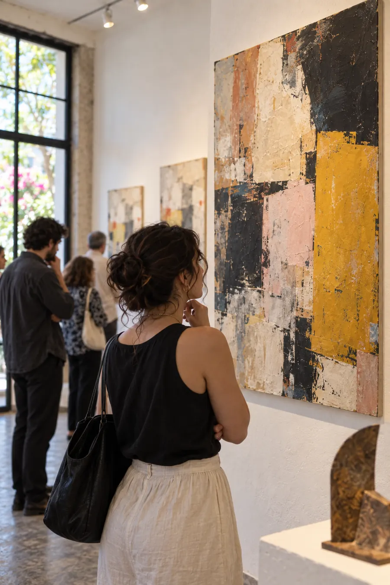
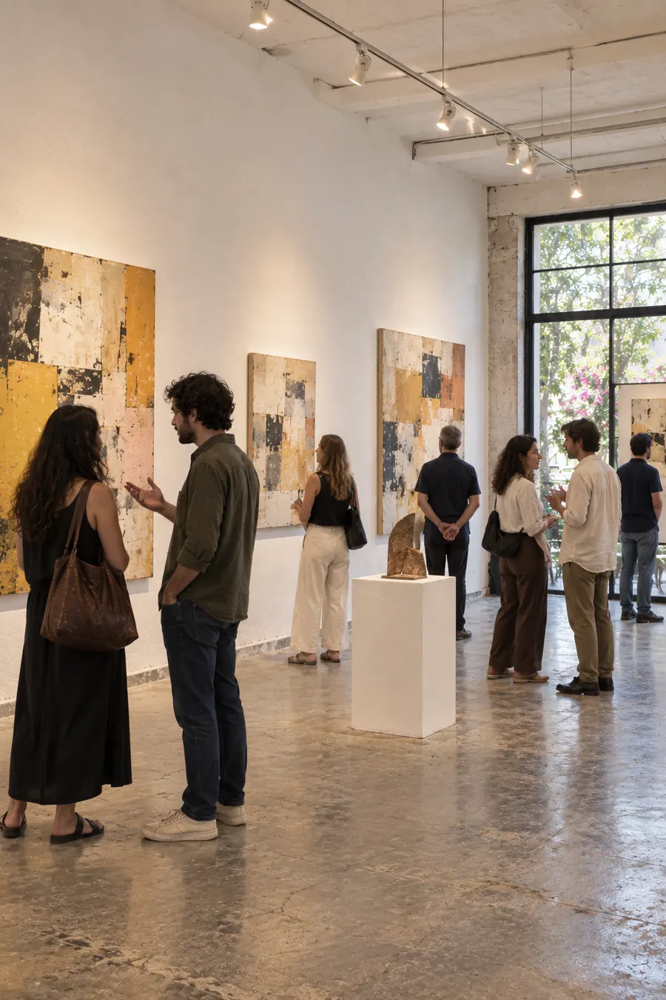

Sobre la muestra
Lo que tarda
en volverse forma
Ninguna de las piezas de esta exposición se hizo rápido. Hay un barro que pasó siete meses secando, una hoja de papel que se pulió a mano durante semanas y una placa de cobre que se dejó a la intemperie un invierno entero para que se oxidara sola.
Materia lenta reúne a ocho artistas que trabajan contra la prisa. La sala está montada para recorrerse despacio: piezas separadas, mucho muro vacío y una banca en el centro por si conviene sentarse.
Curaduría de Irene Salgado
Galería Nueve · 2027

Participan
Los ocho
Ana BeltránCiudad de MéxicoBarro
Tomás ArriagaOaxacaCera y pigmento
Lucía FerrerGuadalajaraPapel hecho a mano
Emilio RuvalcabaMonterreyCobre oxidado
Norma IriartePueblaTejido
Y tres másConsulta la hoja de salaMixta

Para visitarla
La galería
Dónde
Galería NueveCórdoba 9, Roma Norte, CDMX
Inauguración
Jueves 19 de agosto, 19:00 hPalabras de la curadora a las 19:30
Temporada
Del 20 de agosto al 3 de octubreMartes a sábado, 11:00 a 19:00 h
Entrada
Libre, todos los díasLa inauguración sí requiere confirmación por cupo
Inauguración
Confirma
tu asistencia
La sala recibe 70 personas a la vez. Cerramos lista el 14 de agosto.
 Hecho por Savey
Hecho por Savey